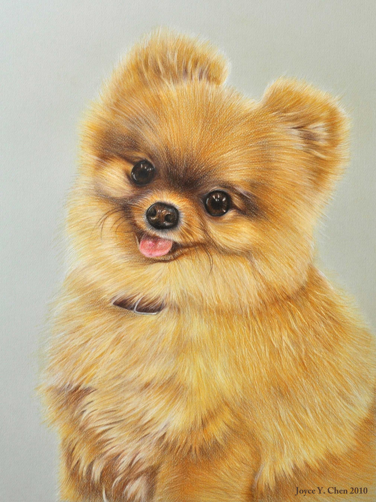
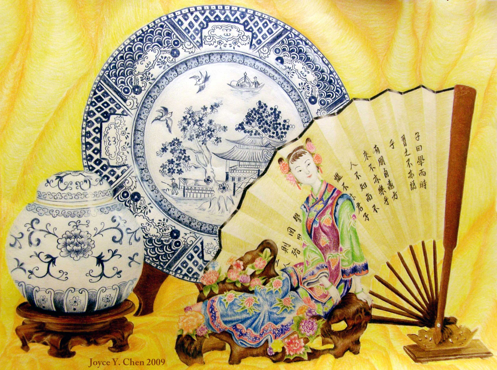
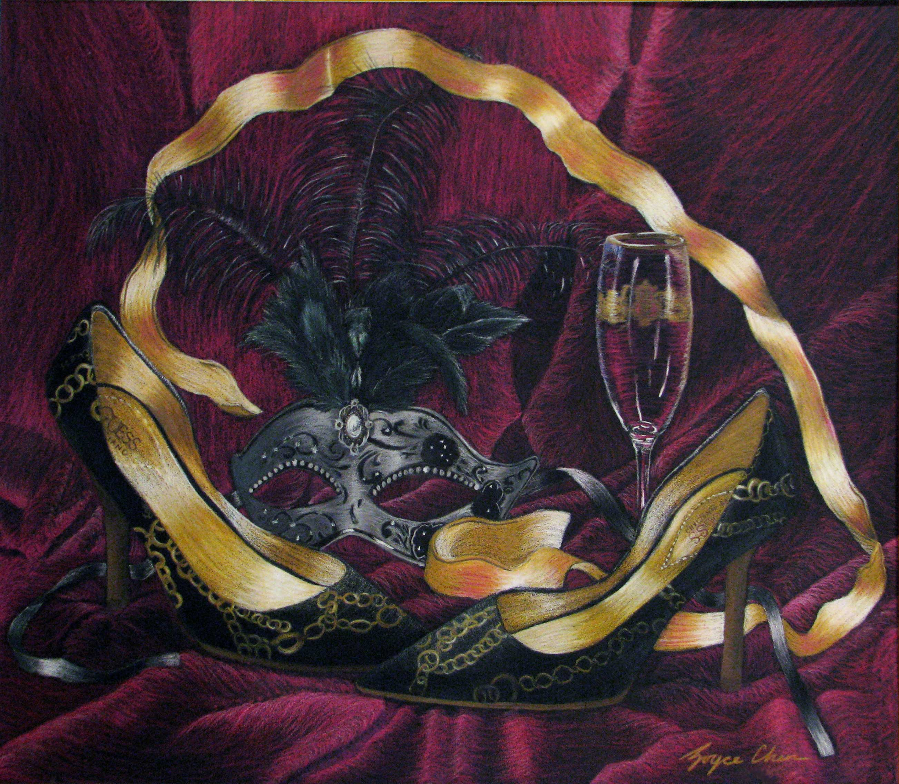
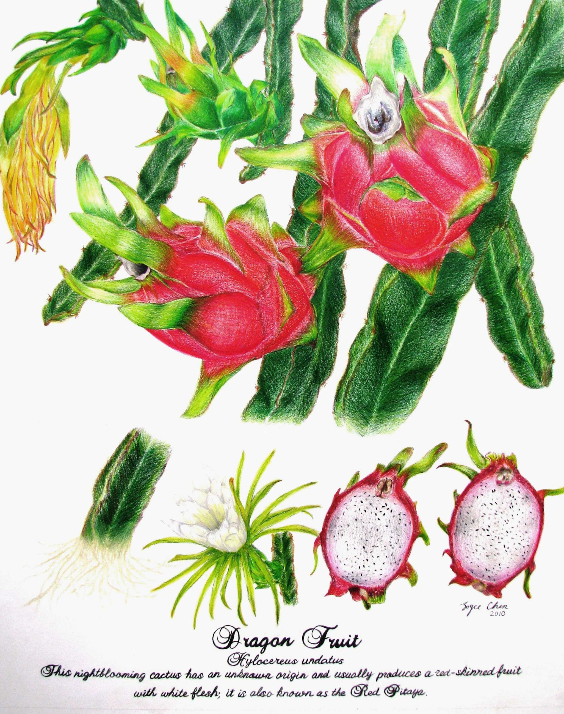
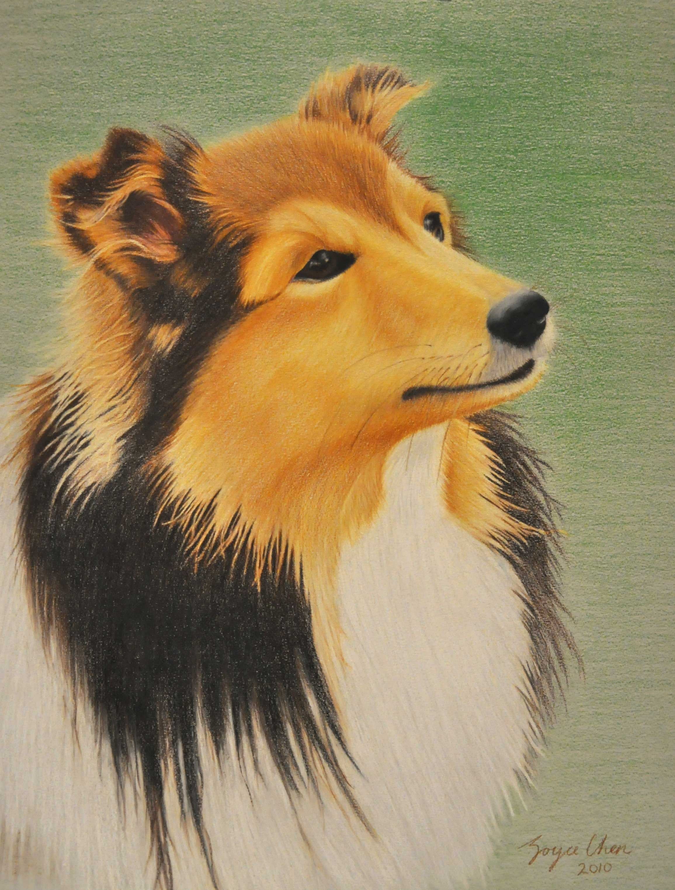
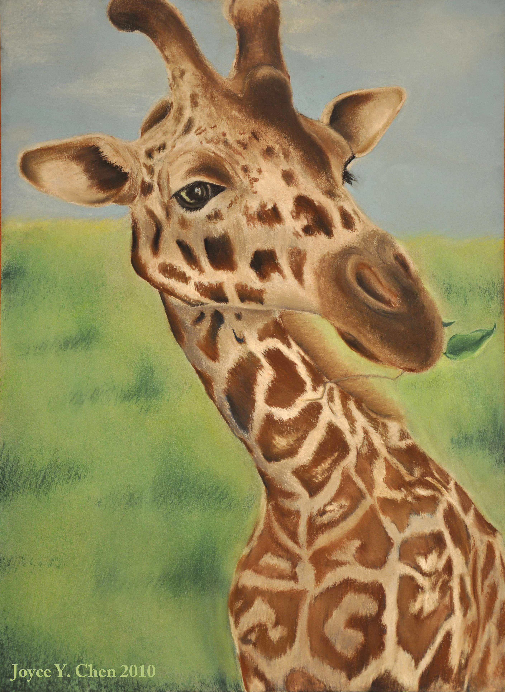

Pencil + Pastel
Brandy
Honorable Mention for Scholastic Art and Writing
Colored pencil on textured gray paper
Portrait of a Pomeranian named Brandy. Highschool-famous as she was the owner's dog.

China Art
Gold Key for Scholastic Art and Writing
Colored pencil on white paper
Still-life, playing on the dual meaning of the word 'china.'

Masquerade
Honorable Mention at Beaux Arts
Colored pencil on textured black paper
Still-life of a masquerade theme. Constrained to only using five objects to describe the theme.

Dragon Fruit Botanical Drawing
Special Recognition for Fairchild Challenge
Colored pencil on white paper
Botanical drawing of a dragon fruit, showing the stage of the fruit: stem, bud, flower, and fruit.

Animal Drawings
Dry pastel on blue paper
Drawings of animals. Exercises for fur and texture, expression of uneven surfaces, and facial structure. The shepherd was a practice piece for Brandy. The giraffe was a practice piece for testing dry pastels as a medium.

